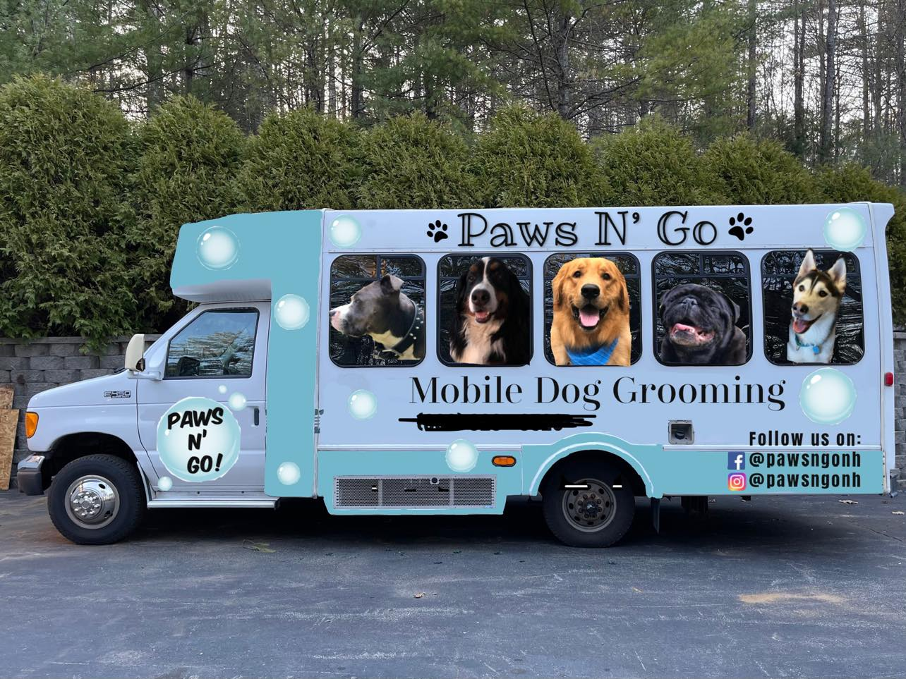

Paws N' Go
Mobile Grooming
because your pet deserves to look their best
Mobile Salon Etiquette

Being mobile, our salon etiquette is a bit different from a typical salon. We ask that you please look over the following information before booking with us:
- When booking, please be aware that your appointment time is not exact, but rather a time-frame. We will arrive at your location within 30 minutes before or after your scheduled appointment time. For example, if you have an appointment for 9:30am, we could arrive anytime between 9am and 10am. This is due to any issues that may arise being mobile (e.g., traffic!). Please make sure you are home during the grooming process, or otherwise leave your dog in an accessible place (e.g., leaving breezeway unlocked, etc.)
- Before our grooming bus arrives, please have your driveway situated beforehand. This means moving any vehicles as needed and making a designated spot for our grooming bus. Once the grooming process has started, I will not be able to move my bus.
- Once your dog has entered the grooming bus, please refrain from watching through the windows or entering the bus. Dogs become more anxious when you are in their line-of-sight, and this can make the grooming process more dangerous and more difficult. We are working with sharp tools around sensitive areas on your pet, and safety is our top priority.
- We ask that if you are unable to make it to your scheduled appointment, to please give us 24-hour notice, so that we may fill the spot with another pup in need of grooming! If no notice is given, then you will be charged for the cost of the missed appointment.
Give us a call at (603)555-5555 and book your appointment today!